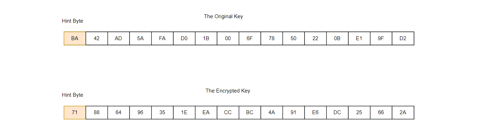
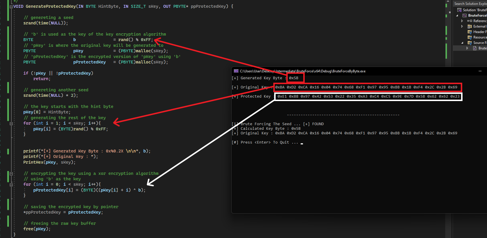
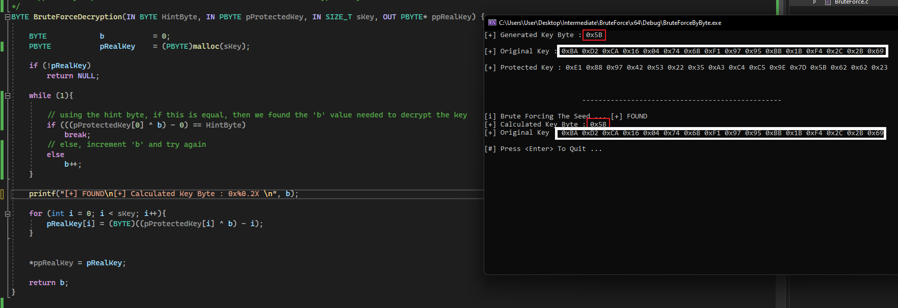

Introduction
In the beginner modules, payload encryption and decryption were demonstrated and a warning was mentioned about saving the encryption key within the binary. Recall that if the encryption key is saved in plaintext within the binary it can be trivially retrieved. One solution is to encrypt the key with another key and decrypt it at runtime. To avoid hardcoding the key inside the binary, the key is brute-forced.
This module will demonstrate an XOR decryption algorithm where the program has to guess the key through brute forcing.
Key Encryption Process
To perform a key brute force, the encryption and decryption functions require a hint byte. Knowing one byte's value before and after the encryption process makes the decryption process possible. In this case, the first byte has been selected as the hint byte.
For example, if the hint byte is BA and when encrypted it becomes 71, then the decryption process will brute force that value until it is reverted to BA, indicating the correct key was used.

Key Encryption Function
The GenerateProtectedKey function takes a hint byte and prepends it as the first byte of the plaintext key. It then uses an XOR encryption algorithm to encrypt the key using a randomly generated key at runtime.
Note that the PrintHex is a function that prints the input buffer as a hex array, and it is being used to print the plaintext generated key.
/*
- HintByte: is the hint byte that will be saved as the key's first byte
- sKey: the size of the key to generate
- ppProtectedKey: pointer to a PBYTE buffer that will recieve the encrypted key
*/
VOID GenerateProtectedKey(IN BYTE HintByte, IN SIZE_T sKey, OUT PBYTE* ppProtectedKey) {
// Genereting a seed
srand(time(NULL));
// 'b' is used as the key of the key encryption algorithm
BYTE b = rand() % 0xFF;
// 'pKey' is where the original key will be generated to
PBYTE pKey = (PBYTE)malloc(sKey);
// 'pProtectedKey' is the encrypted version of 'pKey' using 'b'
PBYTE pProtectedKey = (PBYTE)malloc(sKey);
if (!pKey || !pProtectedKey)
return;
// Genereting another seed
srand(time(NULL) * 2);
// The key starts with the hint byte
pKey[0] = HintByte;
// generating the rest of the key
for (int i = 1; i < sKey; i++){
pKey[i] = (BYTE)rand() % 0xFF;
}
printf("[+] Generated Key Byte : 0x%0.2X \n\n", b);
printf("[+] Original Key : ");
PrintHex(pKey, sKey);
// Encrypting the key using a xor encryption algorithm
// Using 'b' as the key
for (int i = 0; i < sKey; i++){
pProtectedKey[i] = (BYTE)((pKey[i] + i) ^ b);
}
// Saving the encrypted key by pointer
*ppProtectedKey = pProtectedKey;
// Freeing the raw key buffer
free(pKey);
}Key Decryption Process
Since the encryption key used to encrypt the key was not stored anywhere, the decryption function must be able to guess the value of b shown in the GenerateProtectedKey function. To do so, the decryption function will XOR the first byte of the key, which is the hint byte, with different keys until the resulting byte is the original key's hint byte. When that happens, the function will know that the correct b value was selected. The code snippet below shows this logic.
if (((EncryptedKey[0] ^ b) - 0) == HintByte)
// Then b's value is the xor encryption key
else
// Then b's value is not the xor encryption key, try with a different b valueContinuing from the previous example, when 71 becomes BA then the correct b value has been guessed.
Key Decryption Function
The BruteForceDecryption function needs the same hint byte that was passed to the encryption function.
/*
- HintByte : is the same hint byte that was used in the key generating function
- pProtectedKey : the encrypted key
- sKey : the key size
- ppRealKey : pointer to a PBYTE buffer that will recieve the decrypted key
*/
BYTE BruteForceDecryption(IN BYTE HintByte, IN PBYTE pProtectedKey, IN SIZE_T sKey, OUT PBYTE* ppRealKey) {
BYTE b = 0;
PBYTE pRealKey = (PBYTE)malloc(sKey);
if (!pRealKey)
return NULL;
while (1){
// Using the hint byte, if this is equal, then we found the 'b' value needed to decrypt the key
if (((pProtectedKey[0] ^ b) - 0) == HintByte)
break;
// else, increment 'b' and try again
else
b++;
}
// The reverse algorithm of the xor encryption, since 'b' now is known
for (int i = 0; i < sKey; i++){
pRealKey[i] = (BYTE)((pProtectedKey[i] ^ b) - i);
}
// Saving the decrypted key by pointer
*ppRealKey = pRealKey;
return b;
}Demo
The image below shows the generation of the XOR-encrypted key. The arrows point to the code that generates the respective console output.

The image below shows the successful brute force and decryption.

Conclusion
Although this brute-forcing approach is simple, it can be used to prevent malware analysts and researchers from dumping the key from the binary file. This forces them to debug the binary to understand how the key is generated which is where the anti-analysis techniques come in handy.